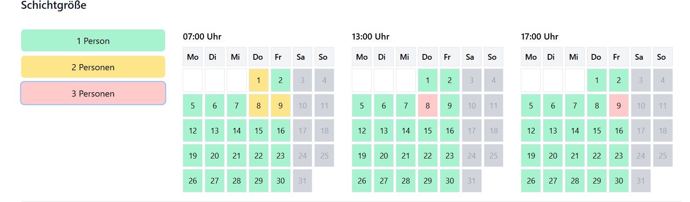
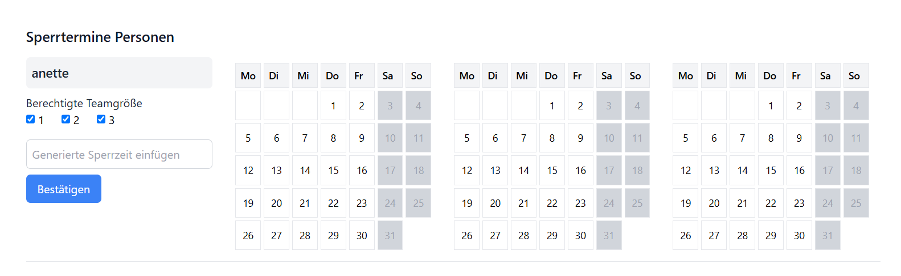
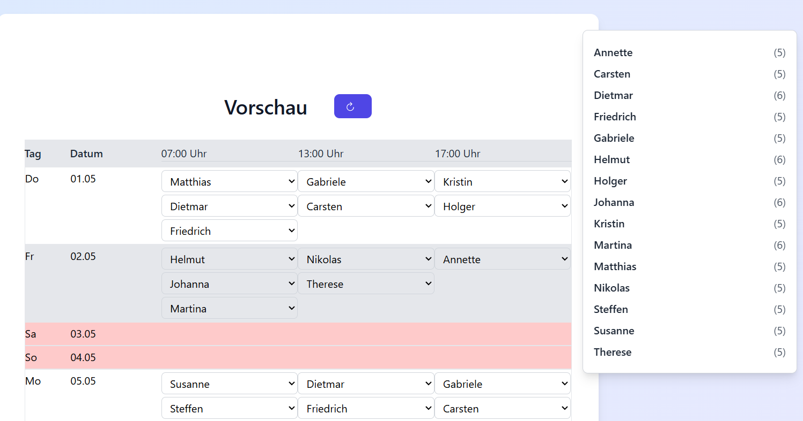

Im Gegensatz zum Elterndienstplaner und Basis-Dienstplaner, kannst Du beim Dienstplaner Pro noch detaillierter arbeiten.
Gebe die Teamgröße pro Schicht an.
Beim Dienstplan im Bild werden in am 1., 8. und 9. zwei Personen für Schicht 1 benötigt. Am 8. werden 3 Personen für Schicht 2 benötigt.
Für jede Schicht gibt es einen eigenen Sperrtermin-Kalender. Außerdem kannst Du unter dem Namen ankreuzen, in welchen Schichtgrößen die Person arbeiten kann.
Vorausgewählt sind alle Schichtgrößen. Damit kann die Person in allen 3 Schittypen arbeiten. Nimmst Du das Häkchen zum Beispiel von der eins, arbeitet die Person immer in zweier oder dreier Teams.
Der Rest läuft wie im Quickstart Guide ab. Vorschau laden, wenn gewünscht manuelle Anpassungen, prüfen und den kostenlosen Dienstplan als PDF herunterladen.
Im Bild arbeiten am 1.5. in Schicht 1 drei Personen, in Schicht 2 zwei Personen und in Schicht 3 ebenfalls zwei Personen.
